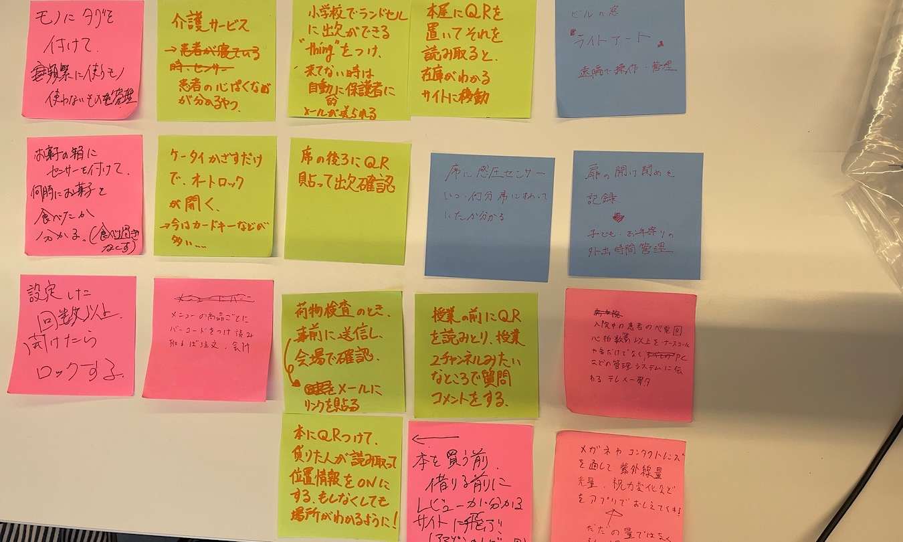
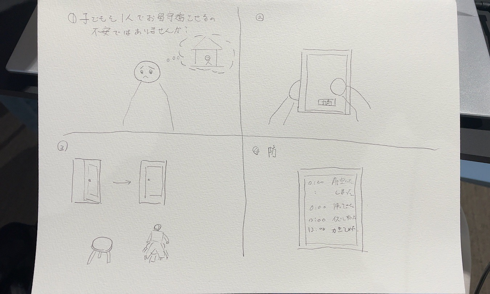

ホーム
デザイン演習Ⅲ・Ⅳ
デザイン演習Ⅲ・Ⅳ 第２回
IoTに関して
グループワークした内容

自分で考えたアイディア

1.子どもを一人で家にお留守番させるのは不安ではありませんか？
2.そこで、スマートフォンから「計測ボタン」を押すと...
3.家の扉や椅子のセンサーが起動
4.家にいるお子様がいつ帰ってきたか、どんな行動をしたかが簡単に分かります！
クラスの仲間からは
・めっちゃいい！
・鍵にもセンサーつければ鍵が閉められているか分かりそう
・防犯にも使えそう
・安全に過ごせているか分かりそう
というコメントがありました。